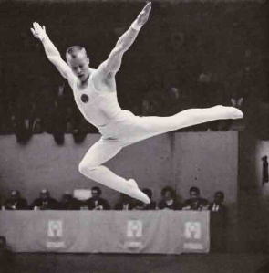

Valery Karasyov (USSR)
1968 Olympic Team Silver
Medalist

Medal Total
Olympic Games: 1
Silver
World Championships: 2 Silver
Valery was born on February 1, 1946. He trained at Dynamo Moscow and was married to fellow Olympic gymnast Olga Kharlova.
Competition Results
1965
Jr. Friendship Tournament (Druzhba): 2nd AA, 1st FX, 2nd PH, 2nd R,
2nd V, 2nd PB
1966
FIN-USSR Dual Meet: 1st Team, 5th AA
FRG-USSR Dual Meet: 1st Team, 5th AA
Trade Union Societies Cup: 1st AA
USSR Championships: 3rd AA
World Championships: 2nd Team, 15th AA, 5th FX
1967
Pre-Olympics: 7th AA
USSR Championships: 4th AA, 4th FX, 6th V
USSR Spartakiad: 4th AA
1968
Olympic Games: 2nd Team, 10th AA, 5th FX
USSR Championships: 2nd FX, 5th V
1969
Moscow Championships: 2nd AA, 1st PH
POL-URS Dual Meet: 1st Team, 5th AA
Trade Unions Spartakiade: 2nd AA, 1st PH, 1st V, 2nd FX, 2nd PB
USSR Championships: 4th PH, 5th FX, 6th PB
USSR Cup: 5th AA
USSR-GDR-FIN: 1st Team, 3rd AA, 2nd PH, 3rd PB
1970
USSR Cup: 5th R, 6th PH
USSR-FIN Dual Meet: 1st Team, 4th AA
World Championships: 2nd Team, 27th AA
1971
USSR Championships: 5th FX
This page was created on November
08, 2006 and was last updated on March 24, 2026.
© Gymn Forum